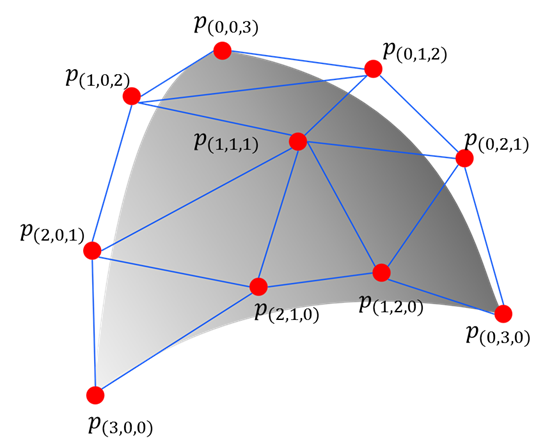
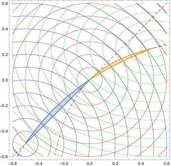

What is Bézier simplex fitting?
You are probably familiar with Bézier curves (1-D) and Bézier triangles (2-D) from computer graphics and CAD software. A Bézier simplex is their natural generalization to any number of dimensions: the same elegant polynomial construction, extended to hyper-surface of an arbitrary dimension defined over a standard simplex.
At its core, Bézier simplex fitting is a general-purpose regression technique. Just as a regular Bézier curve smoothly interpolates or approximates a 1-D point cloud using a small set of control points, a Bézier simplex can approximate any continuous map from a standard simplex to a high-dimensional Euclidean space. Given a point cloud dataset defined over simplex coordinates, it can fit a highly flexible and mathematically well-behaved parametric surface to the data.
This page introduces the formal definition of Bézier simplices, the least-squares fitting algorithm used by PyTorch-BSF, and its most prominent real-world applications.
Bezier simplex
Let \(D, M, N\) be nonnegative integers, \(\mathbb N\) the set of nonnegative integers (including zero!), and \(\mathbb R^N\) the \(N\)-dimensional Euclidean space. We define the index set by
and the simplex by
An \((M-1)\)-dimensional Bezier simplex of degree \(D\) in \(\mathbb R^N\) is a polynomial map \(\mathbf b: \Delta^{M-1}\to\mathbb R^N\) defined by
where \(\mathbf t^{\mathbf d} = t_1^{d_1} t_2^{d_2}\cdots t_M^{d_M}\), \(\binom{D}{\mathbf d}=D! / (d_1!d_2!\cdots d_M!)\), and \(\mathbf p_{\mathbf d}\in\mathbb R^N\ (\mathbf d\in\mathbb N_D^M)\) are parameters called the control points.
{kind=link}

Fig. 1 A 2-D Bézier simplex of degree 3 in \(\mathbb R^3\) and its control points. The shape of the simplex is determined by the control points \(\mathbf p_{(3,0,0)}, \mathbf p_{(2,1,0)}, \ldots, \mathbf p_{(0,0,3)}\).
Bézier simplex fitting
Assume we have a finite dataset \(B\subset\Delta^{M-1}\times\mathbb R^N\) and want to fit a Bézier simplex to the dataset. What we are trying can be formulated as a problem of finding the best vector of control points \(\mathbf p=(\mathbf p_{\mathbf d})_{\mathbf d\in\mathbb N_D^M}\) that minimizes the least square error between the Bezier simplex and the dataset:
PyTorch-BSF provides an algorithm for solving this optimization problem with the L-BFGS algorithm.

Fig. 2 A Bezier simplex fitted to a dataset. The control points are determined by the least squares fitting algorithm.
Approximation theorem
Any continuous map from a simplex to a Euclidean space can be approximated by a Bezier simplex. More precisely, the following theorem holds [KHS+19]:
Theorem 1 (Universal Approximation Theorem)
For any continuous map \(\phi: \Delta^{M-1} \to \mathbb{R}^N\) and any \(\epsilon > 0\), there exists a degree \(D\) and control points \(\mathbf{p}\) such that the Bézier simplex \(\mathbf{b}(\mathbf{t} \mid \mathbf{p})\) satisfies \(\max_{\mathbf{t} \in \Delta^{M-1}} \| \phi(\mathbf{t}) - \mathbf{b}(\mathbf{t} \mid \mathbf{p}) \| < \epsilon\).
This guarantees that Bézier simplices are universal approximators for any continuous simplex-domain function.
Relation to multi-objective optimization
Data suitable for modeling with a Bézier simplex are point clouds distributed along a low-dimensional (e.g., 1 to 10 dimensions) curved simplex lying within a high-dimensional ambient space (e.g., tens to thousands of dimensions). Such data can be regarded as samples from the solution set of a specific class of multi-objective optimization problems.
Multi-objective optimization
In many real-world applications, from engineering design to machine learning, we often need to optimize multiple conflicting criteria simultaneously (e.g., maximizing performance while minimizing cost). Because these objectives naturally compete with one another, it is generally impossible to find a single perfect solution. Instead, multi-objective optimization seeks to find a set of optimal trade-offs, providing the mathematical foundation to explore and select the best compromise.
Definition 1 (Multi-Objective Optimization Problem)
Let \(X\) be a feasible decision space. A multi-objective optimization problem with \(M\) objectives aims to minimize a vector-valued function:
Since the objectives typically conflict with one another, there is rarely a single solution that minimizes all \(M\) objectives simultaneously. Instead, optimality is defined in terms of trade-offs.
Definition 2 (Pareto Set and Pareto Front)
A solution \(x \in X\) is said to dominate another solution \(x' \in X\) if \(f_m(x) \le f_m(x')\) for all \(m \in \{1, \ldots, M\}\) and \(f_j(x) < f_j(x')\) for at least one index \(j\).
A solution \(x^* \in X\) is Pareto optimal if no other solution within \(X\) dominates it.
The Pareto set is the set of all Pareto optimal solutions in the decision space \(X\).
The Pareto front is the image of the Pareto set in the objective space \(f(X) \subset \mathbb{R}^M\).
Weakly simplicial problems
In many real-world multi-objective optimization problems, the Pareto set and Pareto front exhibit a highly structured, continuous shape. Specifically, they often mirror the topological structure of a standard simplex (e.g., a curve for a two-objective problem, a curved triangle for a three-objective problem, and so on). The concept of a weakly simplicial problem formally captures this property, ensuring that the optimal trade-off surfaces are well-behaved and can be elegantly approximated by Bézier simplices.
Definition 3 (Weakly Simplicial Problem [MHI21])
Let \(f:X\to\mathbb R^M\) be a mapping, where \(X\) is a subset of \(\mathbb R^N\). The problem of minimizing \(f\) is \(C^r\)-simplicial if there exists a \(C^r\)-mapping \(\Phi:\Delta^{M-1} \to X^\star(f)\) such that both the mappings \(\Phi|_{\Delta_I}:\Delta_I\to X^\star(f_I)\) and \(f|_{X^\star(f_I)}:X^\star(f_I)\to f(X^\star(f_I))\) are \(C^r\)-diffeomorphisms for any nonempty subset \(I\) of \(\{1,\ldots,M\}\), where \(0\le r\le\infty\). The problem of minimizing \(f\) is \(C^r\)-weakly simplicial if there exists a \(C^r\)-mapping \(\phi:\Delta^{M-1}\to X^\star(f)\) such that \(\phi(\Delta_I)=X^\star(f_I)\) for any nonempty subset \(I\) of \(\{1,\ldots,M\}\), where \(0\le r\le\infty\).

Fig. 3 A simplicial problem: the Pareto set and Pareto front are homeomorphic to a simplex, i.e., they have no pinched topology.
{kind=link}

Fig. 4 A weakly simplicial problem: the Pareto set and Pareto front are a continuous image of a simplex, i.e., they may have a pinched topology.
In weakly simplicial problems, there exists a continuous map from a simplex to the Pareto set and Pareto front, which is guaranteed to be approximable by the Approximation theorem.
Strongly convex problems
While the concept of weakly simplicial problems provides a powerful framework, verifying this property for an arbitrary problem can be challenging. Fortunately, a broad and highly practical class of optimization problems—strongly convex problems—are mathematically guaranteed to be weakly simplicial. This means that if an optimization problem is strongly convex, its Pareto front inherently possesses a simplex-like structure, making it an ideal candidate for Bézier simplex fitting.
Definition 4 (Strongly Convex Problem)
A multi-objective optimization problem is strongly convex if its feasible decision space \(X\) is convex, and every objective function \(f_m\) (\(m=1,\ldots,M\)) is strongly convex. Formally, a function \(f_m\) is strongly convex with parameter \(\mu > 0\) if for all \(x, y \in X\) and \(t \in [0, 1]\):
The formal mathematical foundation for this connection is given by the following theorems, which prove that strongly convex problems are inherently weakly simplicial and that their optimal solutions can be continuously parameterized by a standard simplex.
Theorem 2 (Theorems 1 and 2 in [MHI21])
Let \(f: \mathbb{R}^n \to \mathbb{R}^m\) be a \(C^r\)-strongly convex mapping (\(0 \le r \le \infty\)). Then, the problem of minimizing \(f\) is \(C^{r-1}\)-weakly simplicial for \(r > 0\) and \(C^0\)-weakly simplicial for \(r = 0\).
Theorem 3 (Proposition 1 of [MHI21])
Let \(f: \mathbb{R}^n \to \mathbb{R}^m\) be a strongly convex mapping. Then, the mapping \(x^*: \Delta^{m-1} \to X^*(f)\) defined by
is surjective and continuous.
This guarantees that for strongly convex models, their Pareto fronts admit a simplex structure and can be efficiently reconstructed using Bézier simplex fitting.
Application 1: Elastic net model selection
A canonical and highly practical application of this theory is hyperparameter optimization for the Elastic Net. The elastic net objective combines L1 and L2 regularization parameterized by two coefficients: \(\lambda\) (overall strength) and \(\alpha\) (L1/L2 balance). When appropriately parameterized, these coefficients span a 2-simplex.
Because the elastic net problem is unconstrained and strongly convex, it is guaranteed to be weakly simplicial [MHI21]. Rather than training thousands of models in a grid search over all \((\lambda, \alpha)\) combinations, you can train the Elastic Net on a sparse subset of simplex-structured weight vectors. Fitting a Bézier simplex to the resulting trained models yields a continuous performance surface. This allows practitioners to instantly explore the full continuous spectrum of model hyperparameters and locate the statistically optimal model analytically, without any further retraining.
Weighted-sum scalarization and solution map
The weighted-sum scalarization \(x^*: \Delta^{M-1}\to\mathbb R^N\) defined by
We define the solution map \((x^*,f\circ x^*):\Delta^{M-1}\to G^*(f)\) by
The solution map is continuous and surjective. See [MHI21] for technical details.
Application 2: Robust portfolio management
In financial engineering, a foundational multi-objective optimization problem is the mean-variance portfolio optimization, where investors seek to simultaneously maximize expected returns and minimize risk (variance of return). In practice, estimating the covariance matrix from limited observations often leads to numerical instability. To resolve this, it is common to introduce a strongly convex regularization term, such as an \(L_2\) norm penalty, on the asset allocation weights [Qi].
This formulation effectively creates a three-objective optimization problem:
Because the regularization term is strongly convex, the resulting scalarized objective function becomes strictly strongly convex. According to the theorems in [MHI21], this strongly convex problem is guaranteed to be weakly simplicial. Fitting a Bézier simplex to this problem allows practitioners to continuously map the entire robust Pareto front, guaranteeing unique solutions and numerical stability without manually re-solving for every trade-off preference.
Application 3: Distributed smart grids
In modern energy management systems, the Economic Dispatch Problem (EDP) aims to minimize fuel costs while precisely matching power supply and demand. For traditional generators, the fuel cost is typically formulated as a quadratic function of power output \(P_i\), which is inherently strongly convex:
Moreover, environmental constraints such as minimizing emissions transform this into an Economic Emission Dispatch (EED) multi-objective problem. Because the objectives are strongly convex, advanced decentralized frameworks (like distributed Lagrangian methods or ADMM) can achieve linear convergence across the geographic network. This robust mathematical property guarantees that even in unstable communication environments with latency or differential privacy additions, the network can securely and optimally coordinate energy distribution.
Application 4: Multi-task and federated learning
In multi-task learning (MTL), a single model must simultaneously optimize losses across different tasks, often leading to “gradient conflict” where improving one task degrades another. However, if the combined loss function is strongly convex (e.g., via regularization), recent methodologies demonstrate that dynamically re-weighting gradients can dramatically improve convergence speed and generalization. This principle is particularly powerful in Federated Learning, such as the MOCHA framework, where data is distributed across millions of edge devices. By imposing strongly convex regularizations on the model matrix \(W\) alongside the local losses \(L_t\), the optimization objective becomes:
Because the squared Frobenius norm \(\|W\|_F^2\) provides strong convexity, researchers can guarantee that the global model converges to an optimal shared knowledge state despite restricted communication and incomplete local computations. Similar strategies are being explored in Aligned Multi-Objective Optimization (AMOO) for large-language models (LLMs), where adaptive weighting based on the strongly convex Hessian accelerates training.
Application 5: Multi-objective model predictive control
Autonomous systems like self-driving cars, drones, and industrial robots rely on Model Predictive Control (MPC) to optimize future behavior in real-time. In complex scenarios, these systems face competing goals such as precise trajectory tracking, energy efficiency (minimizing control effort), and motion smoothness (minimizing jerk). When these objectives are framed as positive-definite quadratic forms, the resulting stage cost function is strictly strongly convex:
Where \(Q\) and \(R\) are positive definite matrices. This strong convexity guarantees that the underlying Quadratic Programming (QP) problem has a unique optimal solution that can be solved extremely rapidly at each time step. Furthermore, it inherently ensures the stability, safety (recursive feasibility), and collision-avoidance of distributed multi-agent formations (like drone swarms), acting as a stabilizing anchor in highly uncertain physical environments.
Application 6: Structural topology optimization
In mechanical and civil engineering, topology optimization determines the most efficient material distribution within a given design space. Engineers frequently aim to maximize stiffness (i.e., minimize compliance) while simultaneously minimizing structural weight. The foundation of these calculations is the “Principle of Minimum Potential Energy,” which naturally provides a strongly convex quadratic objective for linear elastic materials. Due to the multi-objective nature of structural design, the Pareto front often contains distinct non-convexities or sharp trade-off “knees.” Formulating a strongly convex “compromise function” to minimize distance to an ideal mathematical point enables practitioners to reliably locate the most stable and superior structural designs across these complex trade-off spaces.
Application 7: Macroeconomic policy optimization
The principles of multi-objective optimization extend far beyond physical engineering into the stabilization of socioeconomic systems. Central banks must continually balance competing mandates, most notably stabilizing prices (controlling inflation) and maximizing employment. These objectives are unified into a centralized “loss function,” which is often formulated using squared deviations from target values:
Where \(\pi_t\) and \(y_t\) are the current inflation rate and output gap, and the asterisk denotes their respective targets. The inclusion of these quadratic terms assures the strong convexity of the objective function. By running macroeconomic simulations (such as DSGE models) against this strongly convex loss function, policymakers can uniquely and deterministically derive the optimal interest rate path, guaranteeing a mathematically optimal equilibrium. Similar strongly convex models are used in microeconomics to model consumer demand and utility maximization under strict budget constraints.
Statistical test for weakly simpliciality
When the problem class is not known in advance, it is not clear whether the Pareto set admits a simplex structure. A data-driven statistical test [HG18] can determine whether this assumption is warranted before committing to a Bézier simplex model. See [HG18] for the methodology and test statistics.
References
Naoki Hamada and Keisuke Goto. Data-driven analysis of pareto set topology. In Proceedings of the Genetic and Evolutionary Computation Conference, 657–664. 2018. URL: https://doi.org/10.1145/3205455.3205613.
Ken Kobayashi, Naoki Hamada, Akiyoshi Sannai, Aiko Tanaka, Kenichi Bannai, and Masashi Sugiyama. Bézier simplex fitting: describing pareto fronts of simplicial problems with small samples in multi-objective optimization. In Proceedings of the AAAI Conference on Artificial Intelligence, volume 33, 2304–2313. 2019. URL: https://doi.org/10.1609/aaai.v33i01.33012304.
Yuto Mizota, Naoki Hamada, and Shunsuke Ichiki. All unconstrained strongly convex problems are weakly simplicial. 2021. URL: https://arxiv.org/abs/2106.12704, arXiv:2106.12704.
Houduo Qi. Optimal portfolio selections via l1,2-norm regularization. URL: https://eprints.soton.ac.uk/451606/1/mvpl12_for_PURE.pdf.
Aiko Tanaka, Akiyoshi Sannai, Ken Kobayashi, and Naoki Hamada. Asymptotic risk of bézier simplex fitting. In Proceedings of the AAAI Conference on Artificial Intelligence, volume 34, 2416–2424. 2020. URL: https://doi.org/10.1609/aaai.v34i03.5622.